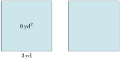
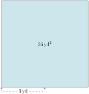

When you write something down, it’s important that the people who read it will understand what you actually meant. But language can be ambiguous. If we say in English, “two times three squared,” do we mean that:
\(2\) is multiplied by \(3\text{,}\) and then the result is squared? That would mean first we have \(6\text{,}\) and then we square \(6\) to end with \(36\text{.}\)
Or that \(2\) is multiplied by “three squared”? That would mean first we square \(3\) to get \(9\text{,}\) and then we multiply by \(2\) to end with \(18\text{.}\)
So it makes a difference, and the English phrase “two times three squared” is arguably ambiguous.
English is allowed to be ambiguous. But math needs to be unambiguous and mean the same thing for everyone who reads it. So for this reason, there are some rules that we’ve all agreed to that control what a math expression really means. These rules are called the “order of operations”, which we review here.
FigureA.5.1.Alternative Video Lesson
SubsectionA.5.1Grouping Symbols
Consider the expression \(2\cdot3^2\text{.}\) There are two math operations here: at some point two things will be multiplied, and at some point something will be raised to a power. The result depends on which operation you decide to do first: If you multiply \(2\cdot3\text{,}\) and then square the result, you end with \(36\text{.}\) If you square \(3\text{,}\) and then multiply that result by \(2\text{,}\) you end with \(18\text{.}\) So if we want all people everywhere to interpret \(2\cdot3^2\) in the same way, then only one of these can be correct.
One tool that we have to clearly tell readers which thing to do first is a pair of grouping symbols, like parentheses and brackets. If you intend to do the multiplication first, then writing \((2\cdot3)^2\)clearly tells your reader to do that. And if you intend to execute the power first, then writing \(2\cdot\left(3^2\right)\) clearly tells your reader to do that.
To visualize the difference between \(2\cdot \left(3^2\right)\) or \((2\cdot 3)^2\text{,}\) consider these garden plots:

FigureA.5.2.3 yd is squared, then doubled: \(2\cdot\left(3^2\right)\)

FigureA.5.3.3 yd is doubled, then squared: \((2\cdot3)^2\)
If we find \(3^2\text{,}\) we have the area of one of the small square garden plots on the left. Then if we double that, we have \(2\cdot\left(3^2\right)\text{,}\) the area of the entire left garden plot.
But if we find \((2\cdot3)^2\text{,}\) then first we are doubling \(3\text{.}\) So we are getting the area of a large square garden plot whose sides are twice as long. We end up with the area of the entire garden plot on the right.
The point is that these amounts are different.
CheckpointA.5.4.
Calculate the value of \(30-((2+3)\cdot2)\text{,}\) respecting the order that the grouping symbols are telling you to execute the arithmetic operations.
Explanation.
The grouping symbols tell us what to work on first. In this exercise, we have grouping symbols within grouping symbols, so any operation in there (the addition) should be executed first:
If math expressions used grouping symbols for every arithmetic operation, we wouldn’t need “order of operations”. Some computer systems work that way, requiring the use of grouping symbols all the time. But it is more common to allow math expressions that don’t have grouping symbols everywhere, like \(5+3\cdot2\text{.}\) Should the addition \(5+3\) be done first, or should the multiplication \(3\cdot2\) be done first? We have a set of rules the world has agreed to, known as the “order of operations”. They tell us what to do first.
The order of operations is nothing more than an agreement that we all have made to prioritize doing arithmetic operations in a certain order.
ListA.5.5.Order of Operations
(P)arentheses and other grouping symbols
Grouping symbols “group” the expression inside them, and the arithmetic within that group needs to be done first.
(E)xponentiation
After grouping symbols, exponentiation has the highest priority. Raise things to powers before doing any other arithmetic.
(M)ultiplication, (D)ivision, and Negation
After all exponentiation is done, start doing multiplication, division, and negation. These things all have equal priority. If there are more than one of them in your expression, do these things in order from left to right as you would naturally read the expression.
(A)ddition and (S)ubtraction
After all other arithmetic is done, addition and subtraction are all that is left. They have equal priority. If there are more than one of them in your expression, do these things in order from left to right as you would naturally read the expression.
To help remember the order of operations, consider the acronym PEMDAS. You might use mnemonic devices to help remember this such as “Please Excuse My Dear Aunt Sally”, “People Eat More Donuts After School”, etc.
We’ll start with a few examples that only invoke a few operations each.
ExampleA.5.6.
Use the order of operations to simplify the following expressions.
\(10+2\cdot 3\text{.}\) With this expression, we have addition and multiplication. The order of operations says the multiplication has higher priority, so do that first:
\(4+10\div 2 - 1\text{.}\) According to the order of operations, the first thing to do is the division. After that, we’ll apply the addition and subtraction working left to right:
\(7-10+4\text{.}\) This expression only has subtraction and addition. These operations tie for priority (even though “A” comes before “S” in PEMDAS). So we work left to right to do them:
\(20\div 4\cdot 7\text{.}\) This expression has only division and multiplication. Again, we have two operations that tie for priority, so we do them in order from left to right:
\((6+7)^2\text{.}\) Here we have addition inside parentheses, and an exponent of \(2\) outside. We must do the arithmetic inside the parentheses first:
\(4(2)^3\text{.}\) This expression has multiplication and an exponent. There are parentheses, but no operation inside them. Parentheses used this way are just to make it clear that the \(4\) and \(2\) are separate numbers, not to be confused with the number \(42\text{.}\) Exponentiation has the higher priority, so we’ll do that part first, and then multiply:
There are several different ways to write multiplication. We can use the symbols \(\cdot\text{,}\)\(\times\text{,}\) and \(*\) to mean multiplication. We can also write two things right next to each other with no symbol in between them to mean multiplication. That is what is happening in Item f, where the \(4\) is written right next to the \((2)^3\) with no symbol in between.
Using a symbol for multiplication is called “explicit multiplication” and not writing any symbol at all is called “implicit multiplication”. For this textbook, explicit and implicit multiplication have the same priority in the order of operations. However there are some conventions out in the real world where implicit multiplication has a higher priority in the order of operations than explicit multiplication. You may have seen memes with expressions like \(6\div2(3)\) that play on how the real world has more than one convention for the order of operations.
CheckpointA.5.8.Practice with order of operations.
Simplify this expression one step at a time, using the order of operations.
With the expression \(24\div(15\div 3+1) +2\text{,}\) we’ll simplify what’s inside the parentheses according to the order of operations, and then take \(24\) divided by that expression as our last step:
The expression \((20-4^2)(4-6)^3\) has two sets of parentheses, so our first step will be to simplify what’s inside each of those first according to the order of operations. Once we’ve done that, we’ll apply the exponent and then finally divide:
SubsectionA.5.3Absolute Value and Implied Grouping
Grouping symbols are more than just parentheses and brackets. Each of the following operations implies some grouping.
Absolute Value Bars
Absolute value bars group the expression inside just like a set of parentheses would. In the expression \(3\abs{2-5}\text{,}\) the first thing to do is subtract \(2-5\) since that is inside the absolute value bars.
Radicals
The same is true with a radical symbol. Everything inside the radical is grouped. For example with \(4+2\sqrt{12-3}\text{,}\) the first arithmetic to do is subtract \(12-3\text{.}\)
Fraction Bars
A fraction bar can create two groups, one in the numerator and one in the denominator. With the expression \(\frac{2+3}{5-2}\div4\text{,}\) the first arithmetic to take care of is adding \(2+3\) and subtracting \(5-2\text{.}\) These two groups can be worked on separately in any order.
Exponents
Content that is inside an exponent is treated as one group, as with \(2+^{2\cdot3}\text{.}\) In that example, the first arithmetic to take care of is multiplying \(2\cdot3\text{.}\)
Each of these implied groupings also ask you to do something once the arithmetic on the inside is completed. Actually taking the absolute value or the square root, perhaps. Doing the division in the case of a fraction. Raising something to a power. But before doing those things, all of the arithmetic inside the groups should be take care of.
ExampleA.5.11.
Use the order of operations to simplify the following expressions.
\(4-3\abs{5-7}\text{.}\) The absolute value bars group the \(5-7\) so we must do that subtraction first. Then we take the absolute value and continue:
It would be a mistake to subtract \(4-3\) first, because that \(3\) is multiplied by the \(\abs{5-7}\text{.}\) So subtracting \(4-3\) would violate the order of operations.
\(8-\sqrt{5^2-8\cdot 2}\text{.}\) The radical is grouping \(5^2-8\cdot 2\text{,}\) which must be simplified first. Then we take the square root and continue:
\(\dfrac{2^4+3\cdot 6}{5-18\div 2}\text{.}\) We recognize that the fraction bar is creating two groups. We should simplify the numerator and denominator separately according to the order of operations, and proceed from there:
To simplify this expression, the first thing we want to recognize is the role of the main fraction bar, which groups the numerator and denominator. This implies we’ll simplify the numerator and denominator separately according to the order of operations, and then reduce the fraction that results:
SubsectionA.5.4Understanding \((-a)^m\) versus \(-a^m\)
We noted in the order of operations that using the minus sign to negate a number has the same priority as multiplication and division.
How would you write a math expression that takes the number \(-4\) and squares it? Is it OK to write \(-4^2\text{?}\) How about \((-4)^2\text{?}\)
These expressions mean very different things. The second option, \((-4)^2\) is squaring the number \(-4\text{.}\) The parentheses make this clear. The result is \(16\text{.}\)
The first expression \(-4^2\) is different. There are two actions here: a negation and and exponentiation. According to the order of operations, the exponentiation has higher priority, so we shoudl do \(4^2\) first.
and this is not the same as \((-4)^2\text{,}\) which is positive\(16\text{.}\)
WarningA.5.14.Negative Numbers Raised to Powers.
You may find yourself needing to raise a negative number to a power, and using a calculator to do the work for you. If you do not understand the issue described above, then you may get incorrect results.
Entering -4^2 into a calculator or computer will result in \(-16\text{.}\)
Entering (-4)^2 into a calculator or computer will result in \(16\text{.}\)
Try entering these into your own calculator.
CheckpointA.5.15.Negating and Raising to Powers.
Compute the following. In each part, the first expression asks you to exponentiate and then negate the result. The second expression has a negative number raised to a power.
(a)
\(-3^4={}\) and \((-3)^4={}\)
Explanation.
\(-3^4=-81\) and \((-3)^4=81\)
(b)
\(-4^3={}\) and \((-4)^3={}\)
Explanation.
\(-4^3=-64\) and \((-4)^3=-64\)
(c)
\(-1.1^2={}\) and \((-1.1)^2={}\)
Explanation.
\(-1.1^2=-1.21\) and \((-1.1)^2=1.21\)
You might notice in Checkpoint 15 that \(-4^3\) and \((-4)^3\) each have the same result, \(-64\text{.}\) It’s true that the results are the same, but the two expressions say different things. With \(-4^3\text{,}\) you raise to a power first, then negate. With \((-4)^3\text{,}\) you negate first, then raise to a power. It’s like two different roads that happen to lead to the same place, which happens sometimes.
ExercisesA.5.5Exercises
Skills
Exercise Group.
Use the order of operations to simplify the expression.
1.
\(7 - 2 + 3\)
Answer.
\(8\)
2.
\(8 + 6\cdot5\)
Answer.
\(38\)
3.
\(9 - 4\cdot8\)
Answer.
\(-23\)
4.
\(2 + 9(5)\)
Answer.
\(47\)
5.
\(3 - 7(8)\)
Answer.
\(-53\)
6.
\(4 + 3\div3\)
Answer.
\(5\)
7.
\(9 - 24\div6\)
Answer.
\(5\)
8.
\(5 + 4/2\)
Answer.
\(7\)
9.
\(6 - 15/5\)
Answer.
\(3\)
10.
\(180 \div 15/3\)
Answer.
\(4\)
11.
\(4 + 3^{4}\)
Answer.
\(85\)
12.
\(7 - 2^{4}\)
Answer.
\(-9\)
13.
\(2 \cdot 9^{2}\)
Answer.
\(162\)
14.
\(96 \div 4^{2}\)
Answer.
\(6\)
15.
\(36 / 2^{2}\)
Answer.
\(9\)
16.
\(4 \cdot 4\mathbin{^\wedge}3\)
Answer.
\(256\)
Exercise Group.
Use the order of operations to simplify the expression that has grouping symbols.
17.
\(5 - ( 8 + 4 )\)
Answer.
\(-7\)
18.
\(2 - [ 4 - 3 ]\)
Answer.
\(1\)
19.
\(8 \cdot [ 6 + 9 ]\)
Answer.
\(120\)
20.
\([5 + 2] \cdot 7\)
Answer.
\(49\)
21.
\(2 \cdot [ 6 - 4 ]\)
Answer.
\(4\)
22.
\((7 - 9) \cdot 2\)
Answer.
\(-4\)
23.
\(5 ( 3 + 8 )\)
Answer.
\(55\)
24.
\((2 + 7) 5\)
Answer.
\(45\)
25.
\(7 ( 2 - 4 )\)
Answer.
\(-14\)
26.
\((4 - 6) 9\)
Answer.
\(-18\)
27.
\(72 \div [ 5 + 3 ]\)
Answer.
\(9\)
28.
\([23 + 12] \div 5\)
Answer.
\(7\)
29.
\(40 \div [ 9 - 1 ]\)
Answer.
\(5\)
30.
\([40 - 4] \div 4\)
Answer.
\(9\)
31.
\(210 \div ( 6 \cdot 7 )\)
Answer.
\(5\)
32.
\(80 \div ( 8 \div 2 )\)
Answer.
\(20\)
33.
\(( 1 + 1 ) ^{4}\)
Answer.
\(16\)
34.
\(( 7 - 3 ) ^{3}\)
Answer.
\(64\)
35.
\(( 3 \cdot 2 ) ^{2}\)
Answer.
\(36\)
36.
\([ 6 \div 2 ] ^{4}\)
Answer.
\(81\)
37.
\(-[ 6 + 2 ]\)
Answer.
\(-8\)
38.
\(-[ 3 - 6 ]\)
Answer.
\(3\)
39.
\(-[ 8 \cdot 9 ]\)
Answer.
\(-72\)
40.
\(-( 20 \div 4 )\)
Answer.
\(-5\)
41.
\(-( 9 ^{2})\)
Answer.
\(-81\)
42.
\(( -2 )^{4}\)
Answer.
\(16\)
Exercise Group.
Use the order of operations to simplify the expression that has absolute value or implied grouping.
43.
\(4 - \abs{5 - 7}\)
Answer.
\(2\)
44.
\(5 \cdot \abs{2 - 3}\)
Answer.
\(5\)
45.
\(\abs{6 - 8} \cdot 4\)
Answer.
\(8\)
46.
\(7 \abs{4 - 9}\)
Answer.
\(35\)
47.
\(\abs{8 - 2} 4\)
Answer.
\(24\)
48.
\(63 \div \abs{0 - 7}\)
Answer.
\(9\)
49.
\(\abs{-16 - 2} \div 6\)
Answer.
\(3\)
50.
\(\abs{15 - 5}^{2}\)
Answer.
\(100\)
51.
\(-\abs{4 + 7}\)
Answer.
\(-11\)
52.
\(-\abs{4 - 5}\)
Answer.
\(-1\)
53.
\(\sqrt{16+9}+11\)
Answer.
\(16\)
54.
\(6+\sqrt{33+3}\)
Answer.
\(12\)
55.
\(\sqrt{67-3}-15\)
Answer.
\(-7\)
56.
\(9-\sqrt{83-2}\)
Answer.
\(0\)
57.
\(6\sqrt{95+5}\)
Answer.
\(60\)
58.
\(3\sqrt{10-9}\)
Answer.
\(3\)
59.
\(4\sqrt{18\cdot2}\)
Answer.
\(24\)
60.
\(5\sqrt{189\div7}\)
Answer.
\(25.9808\)
61.
\(\dfrac{96 \div 8}{2 \cdot 3} \cdot 4\)
Answer.
\(8\)
62.
\(\dfrac{192 \div 2}{18 - 6} \cdot 7\)
Answer.
\(56\)
63.
\(\dfrac{144 \div 2}{4 \cdot 3} \cdot 3\)
Answer.
\(18\)
64.
\(6 + \dfrac{2 \cdot 9}{14 - 8}\)
Answer.
\(9\)
65.
\(9^{18 \div 9} + 7\)
Answer.
\(88\)
66.
\(10^{-4 + 5} \cdot 7\)
Answer.
\(70\)
67.
\(2^{10 - 9} - 7\)
Answer.
\(-5\)
68.
\(3^{-2 + 5} + 7\)
Answer.
\(34\)
Challenge
69.
In this challenge, your job is to create expressions, using addition, subtraction, multiplication, and parentheses. You may use the numbers, \(1, 2, 3\text{,}\) and \(4\) in your expression, using each number only once. For example, you could make the expression: \(1+2 \cdot 3 - 4\text{.}\)
The greatest value that it is possible to create under these conditions is .
The least value that it is possible to create under these conditions is .
Answer1.
\(36\)
Answer2.
\(-23\)
Explanation.
The greatest value is \(36\text{,}\) which comes from \((1+2) \cdot 3 \cdot 4\text{.}\)
The least value is \(-23\text{,}\) which comes from \(1 - (2 \cdot 3 \cdot 4)\text{.}\)